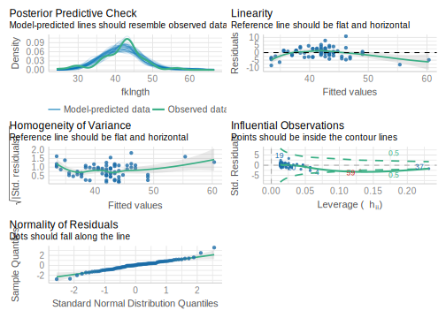

3.6 Simple linear regression
In correlation analysis we are interested in how pairs of variables covary: However, in regression analysis, we are attempting to estimate a model that predicts a variable (the dependent variable) from another variable (the independent variable).
As with any statistical analysis, the best way to begin is by looking at your data. If you are interested in the relationship between two variables, say, Y and X, produce a plot of Y versus X just to get a “feel” for the relationship.
- The data file
sturgeon.csvcontains data for sturgeons collected from 1978-1980 at Cumberland House, Saskatchewan and The Pas, Manitoba. Make a scatterplot offklngth(the dependent variable) versusage(the independent variable) for males and add a linear regression and a loess smoother. What do you conclude from this plot?
sturgeon.male <- subset(sturgeon, subset = sex == "MALE")
mygraph <- ggplot(
data = sturgeon.male, # source of data
aes(x = age, y = fklngth)
) # aesthetics: y=fklngth, x=rdwght
# plot data points, regression, loess trace
mygraph <- mygraph +
stat_smooth(method = lm, se = FALSE, color = "green") + # add linear regression, but no SE shading
stat_smooth(color = "red") + # add loess
geom_point() # add data points
mygraph # display graph
This suggests that the relationship between age and fork length is not linear.
Suppose that we want to know the growth rate of male sturgeon. One estimate (perhaps not a very good one) of the growth rate is given by the slope of the fork length - age regression.
First, let’s run the regression with the lm() command, and save its
results in an object called RegModel.1.
RegModel.1 <- lm(fklngth ~ age, data = sturgeon.male)Nothing appears on the screen, but don’t worry, it all got saved in memory. To see the statistical results, type:
summary(RegModel.1)##
## Call:
## lm(formula = fklngth ~ age, data = sturgeon.male)
##
## Residuals:
## Min 1Q Median 3Q Max
## -8.4936 -2.2263 0.1849 1.7526 10.8234
##
## Coefficients:
## Estimate Std. Error t value Pr(>|t|)
## (Intercept) 28.50359 1.16873 24.39 <2e-16 ***
## age 0.70724 0.05888 12.01 <2e-16 ***
## ---
## Signif. codes: 0 '***' 0.001 '**' 0.01 '*' 0.05 '.' 0.1 ' ' 1
##
## Residual standard error: 3.307 on 73 degrees of freedom
## (5 observations deleted due to missingness)
## Multiple R-squared: 0.664, Adjusted R-squared: 0.6594
## F-statistic: 144.3 on 1 and 73 DF, p-value: < 2.2e-16R output gives you:
Call:A friendly reminder of the model fitted and the data used.Residuals:General statistics about the residuals around the fitted model.Coefficients:Fitted model parameter estimates, standard errors, t values and associated probabilities.Residual standard error:Square root of the residual variance.Multiple R-squared:Coefficient of determination. It corresponds to the proportion of the total variance of the dependent variable that is accounted for by the regression (i.e. by the independent variable)Adjusted R-squared:The adjusted R-squared accounts for the number of parameters in the model. If you want to compare the performance of several models with different numbers of parameters, this is the one to useF-statistic:This is the test of the overall significance of the model. In the simple regression case, this is the same as the test of the slope of the regression.
The estimated regression equation is therefore:
\[ Fklngth = 28.50359 + 0.70724 * age\]
Given the highly significant F-value of the model (or equivalently the highly significant t-value for the slope of the line), we reject the null hypothesis that there is no relationship between fork length and age.
3.6.1 Testing regression assumptions
Simple model I regression makes four assumptions:
- the X variable is measured without error;
- the relationship between Y and X is linear;
- that for any value of X, the Y’s are independently and normally distributed;
- the variance of Y for fixed X is independent of X.
Having done the regression, we can now test the assumptions. For most biological data, the first assumption is almost never valid; usually there is error in both Y and X. This means that in general, slope estimates are biased, but predicted values are unbiased. However, so long as the error in X is small relative to the range of X in your data, the fact that X has an associated error is not likely to influence the outcome dramatically. On the other hand, if there is substantial error in X, regression results based on a model I regression may give poor estimates of the functional relationship between Y and X. In this case, more sophisticated regression procedures must be employed which are, unfortunately, beyond the scope of this course.
The other assumptions of a model I regression can, however, be tested, or at least evaluated visually. The plot() command can display diagnostics for linear models.
par(mfrow = c(2, 2), las = 1)
plot(RegModel.1)The par() command is used here to tell R to display 2 rows and 2 columns of graphs per page (there are 4 diagnostic graphs for linear models generated automatically), and the last statement is to tell R to rotate the labels of the Y axis so that they are perpendicular to the Y axis. (Yes, I know, this is not at all obvious.)
You will get:

- Upper left tell you about linearity, normality, and homoscedasticity of the residuals. It shows the deviations around the regression vs the predicted values. Remember that the scatterplot ( fklngth vs age ) suggested that the relationship between fork length and age is not linear. Very young and very old sturgeons tended to fall under the line, and fish of average age tended to be a bit above the line. This is exactly what the residual vs fitted plot shows. The red line is a lowess trace through these data. If the relationship was linear, it would be approximately flat and close to 0. The scatter of residuals tells you a bit about their normality and homoscedasticity, although this graph is not the best way to look at these properties. The next two are better.
- Upper right is to assess the normality of the residuals. It is a QQ plot of the residuals . If the residuals were normally distributed, they would fall very close to the diagonal line. Here, we see it is mostly the case, except in the tails
- Bottom left titled Scale-Location, helps with assessing homoscedasticity. It plots the square root of the absolute value of the standardized residual (residual divided by the standard error of the residuals, this scales the residuals so that their variance is 1 ) as a function of the fitted value. This graph can help you visualize whether the spread of the residuals is constant or not. If residuals are homoscedastic, then the average will not change with increasing fitted values. Here, there is slight variability, but it is not monotonous (i.e. it does not increase or decrease systematically) and there is no strong evidence against the assumption of homoscedasticity.
- Bottom right plots the residuals as a function of leverage and can help detecting the presence of outliers or points that have a very strong influence on the regression results. The leverage of a point measures how far it is from the other points, but only with respect to the independent variable. In the case of simple linear regression, it is a function of the difference between the observation and the mean of the independent variable. You should look more closely at any observation with a leverage value that is greater than: \(2(k+1)/n\), where $\(k\) is the number of independent variables (here 1), and \(n\) is the number of observations. In this case there is 1 independent variable, 75 observations, and points with a leverage higher than 0.053 may warrant particular scrutiny. The plot also gives you information about how the removal of a point from the data set would change the predictions. This is measured by the Cook’s distance, illustrated by the red lines on the plot. A data point with a Cook distance larger than 1 has a large influence.
The R package performance offers a new and updated version of those graphs with colours and more plots to help visually assess the assumptions with the function model_check()
check_model(RegModel.1)## Loading required namespace: qqplotr
So, what is the verdict about the linear regression between fklngth and age ? It fails the linearity, possibly fails the normality, passes homoscedasticity, and this does not seem to be too strongly affected by some bizarre points.
3.6.2 Formal tests of regression assumptions
In my practice, I seldom use formal tests of regression assumptions and mostly rely on graphs of the residuals to guide my decisions. To my knowledge, this is what most biologists and data analysts do. However, in my early analyst life I was not always confident that I was interpreting these graphs correctly and wished that I had a formal test or a statistic quantifying the degree of deviation from the regression assumptions.
The lmtest R package, not part of the base R installation, but available from CRAN, contains a number of tests for linearity and homoscedasticity. And one can test for normality using the Shapiro-Wilk test seen previously.
First, you need to load (and maybe install) the lmtest package.
library(lmtest)bptest(RegModel.1)##
## studentized Breusch-Pagan test
##
## data: RegModel.1
## BP = 1.1765, df = 1, p-value = 0.2781The Breusch-Pagan test examines whether the variability of the residuals is constant with respect to increasing fitted values. A low p value is indicative of heteroscedasticity. Here, the p value is high, and supports my visual assessment that the homoscedasticity assumption is met by these data.
dwtest(RegModel.1)##
## Durbin-Watson test
##
## data: RegModel.1
## DW = 2.242, p-value = 0.8489
## alternative hypothesis: true autocorrelation is greater than 0The Durbin-Watson test can detect serial autocorrelation in the residuals. Under the assumption of no autocorrelation, the D statistic is 2. This test can detect violation of independence of observations (residuals), although it is not foolproof. Here there is no problem identified.
resettest(RegModel.1)##
## RESET test
##
## data: RegModel.1
## RESET = 14.544, df1 = 2, df2 = 71, p-value = 5.082e-06The RESET test is a test of the assumption of linearity. If the linearity assumption is met, the RESET statistic will be close to 1. Here, the statistic is much larger (14.54), and very highly significant. This confirms our visual assessment that the relationship is not linear.
shapiro.test(residuals(RegModel.1))##
## Shapiro-Wilk normality test
##
## data: residuals(RegModel.1)
## W = 0.98037, p-value = 0.2961The Shapiro-Wilk normality test on the residual confirms that the deviation from normality of the residuals is not large.